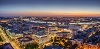

Belgrado é uma cidade da Sérvia na Europa, situada na confluência do rio Sava com o rio Danúbio, sobre a planície da Panônia na península Balcânica, com uma altura média sobre o nível do mar de 116,75 metros.
Belgrado à noiteBelgrado à noite com uma vista diferente
On this Very Street in Belgrade
Charles Simic
Your mother carried you
Out of the smoking ruins of a building
And set you down on this sidewalk
Like a doll bundled in burnt rags,
Where you now stood years later
Talking to a homeless dog,
Half-hidden behind a parked car,
His eyes brimming with hope
As he inched forward, ready for the worst.